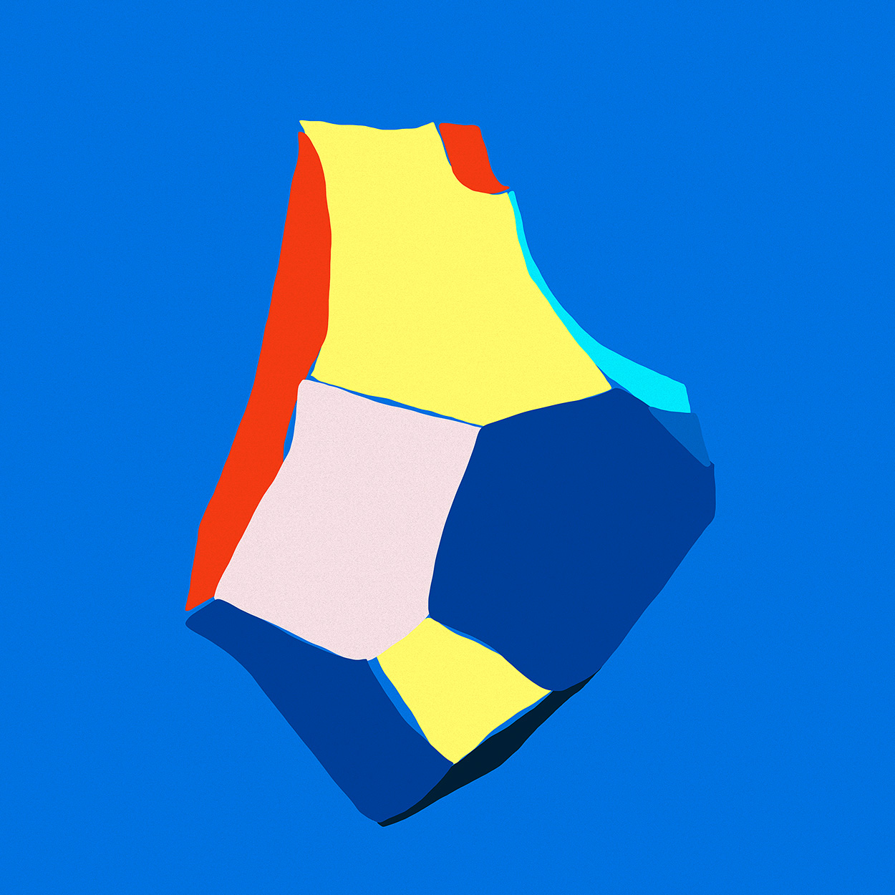
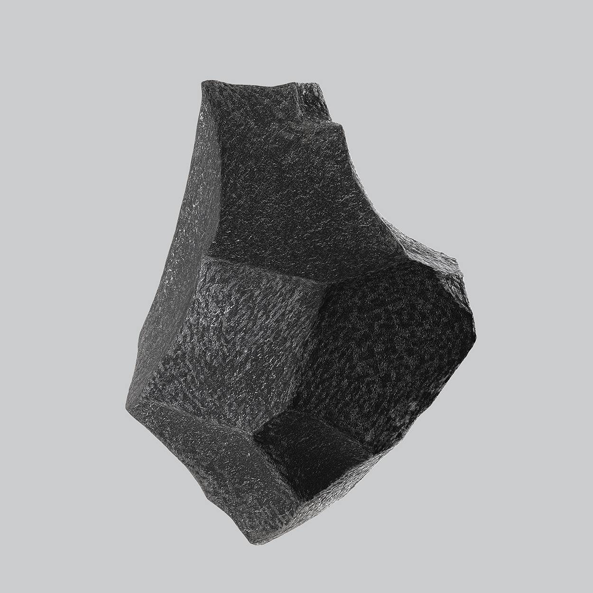
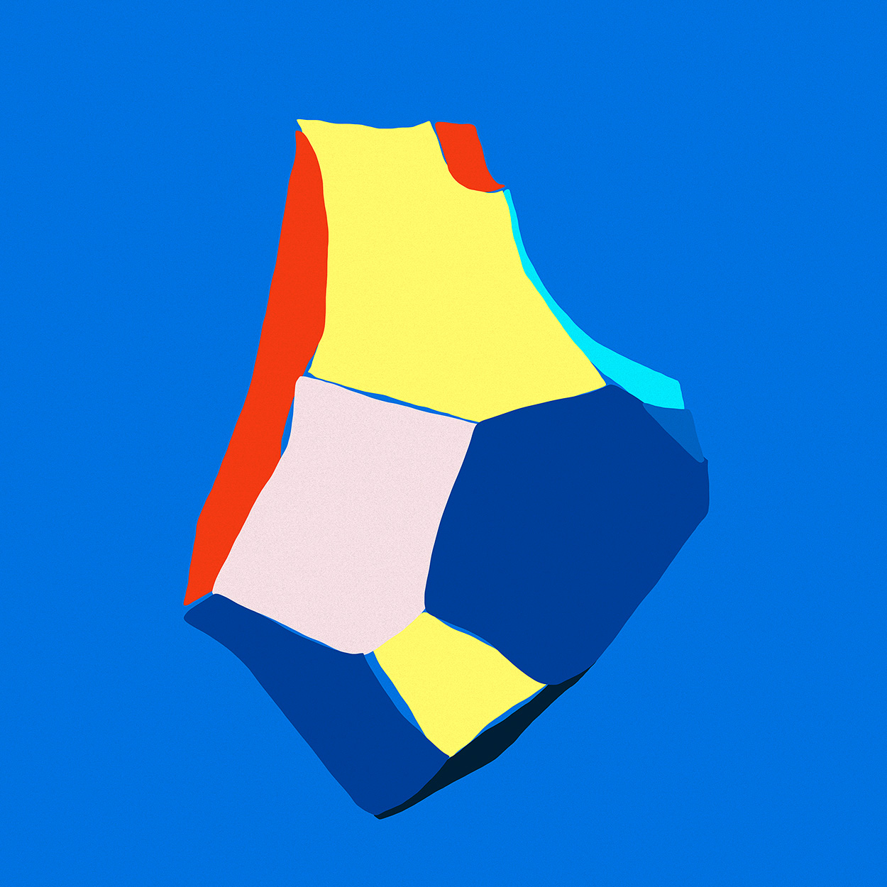
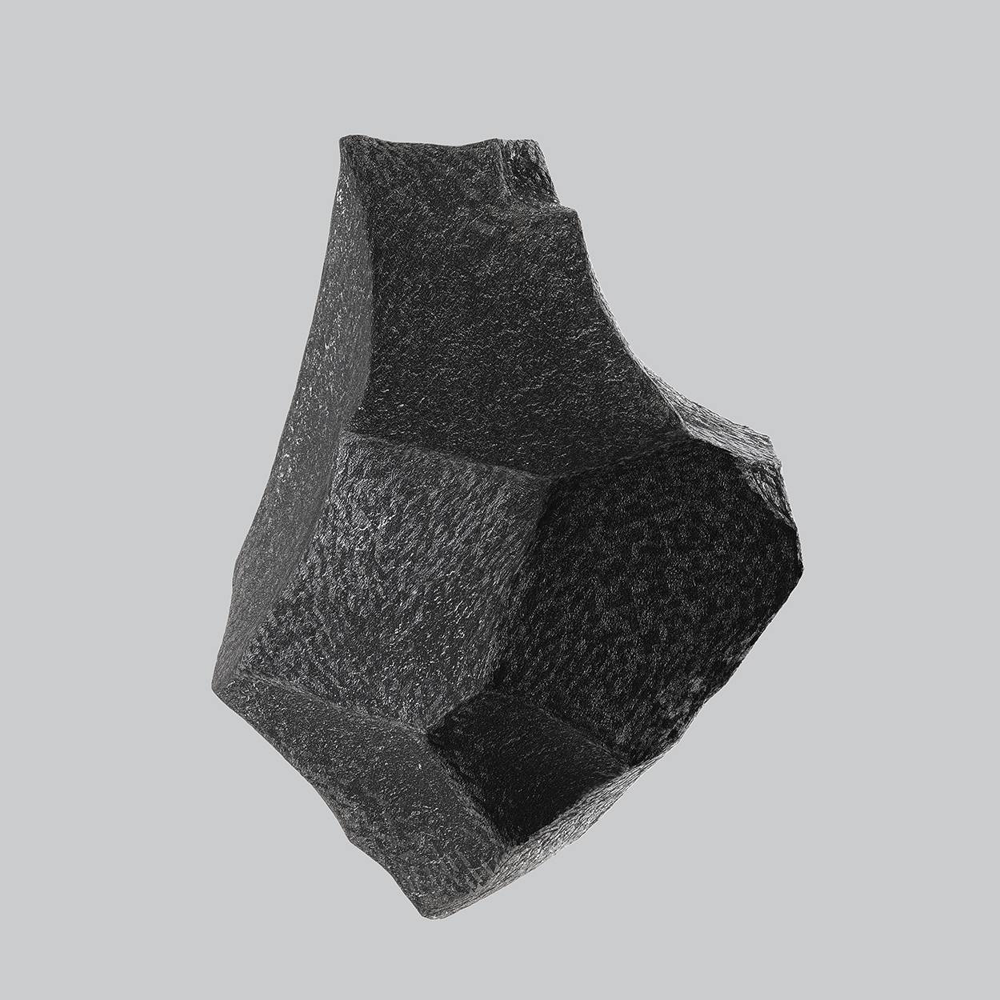

Mutuo, my graduation project, was based upon the invention of a Brazilian Dj duo through different materials, in which I try to simulate their evolution and transmit their personalities and passion for music through Graphic Design only — no use of sound. In this section I was supposed to indicate their proper start as music artists, so I chose to come up with an EP since it's shorter (simpler, in a way) than an actual album. I also used their start as my main concept for this project, which is why I have a rock as the center piece on the graphic compositions. The series of reinterpretations based on this one initial shape and the way they are used and combined translate visually what Mutuo's purpose as musicians would be: to add new sounds, layers, colors — experimentations on electronic music.
My main goal for this section was to come up with a material that intersects both 2D and 3D into one graphic, strong language. This language should also be translated into an animation and unfolded into a family of covers for the singles, each related to one of the primary illustrations. Lastly I also chose to create a visual identity that would accompany the graphic pieces from this moment on: in order to do that I developed a whole typeface called Som Sans, with opentype resources that allowed me to create an expandable typographic identity that translates music into letters.
Gênese

Second section from my Bachelor graduation project. In this phase I came up with an EP that gives birth to Mutuo's musical expression and visual identity.
 


